Глава 1 содержит самую суть нидерландского дорожного законодательства (RVV 1990) — правила, определяющие, что каждый участник дорожного движения обязан делать и чего делать не должен в каждый момент времени. Эти правила распространяются на всех: велосипедистов, водителей мопедов, водителей легковых и грузовых автомобилей, пешеходов, идущих организованной колонной, а также всадников. Никто на дороге не освобождён от их соблюдения.
Правила сгруппированы по темам. Каждый раздел посвящён одному аспекту поведения на дороге. Вместе они формируют целостную картину того, как должно быть устроено движение на дорогах Нидерландов.
§ 1 — Расположение на дороге
Где должен двигаться каждый тип участников дорожного движения — и по какой части дороги.
Каждый водитель обязан держаться как можно правее. Это основополагающее правило расположения на дороге — оно действует на любой дороге и в любой ситуации, если иное прямо не предусмотрено другим правилом.
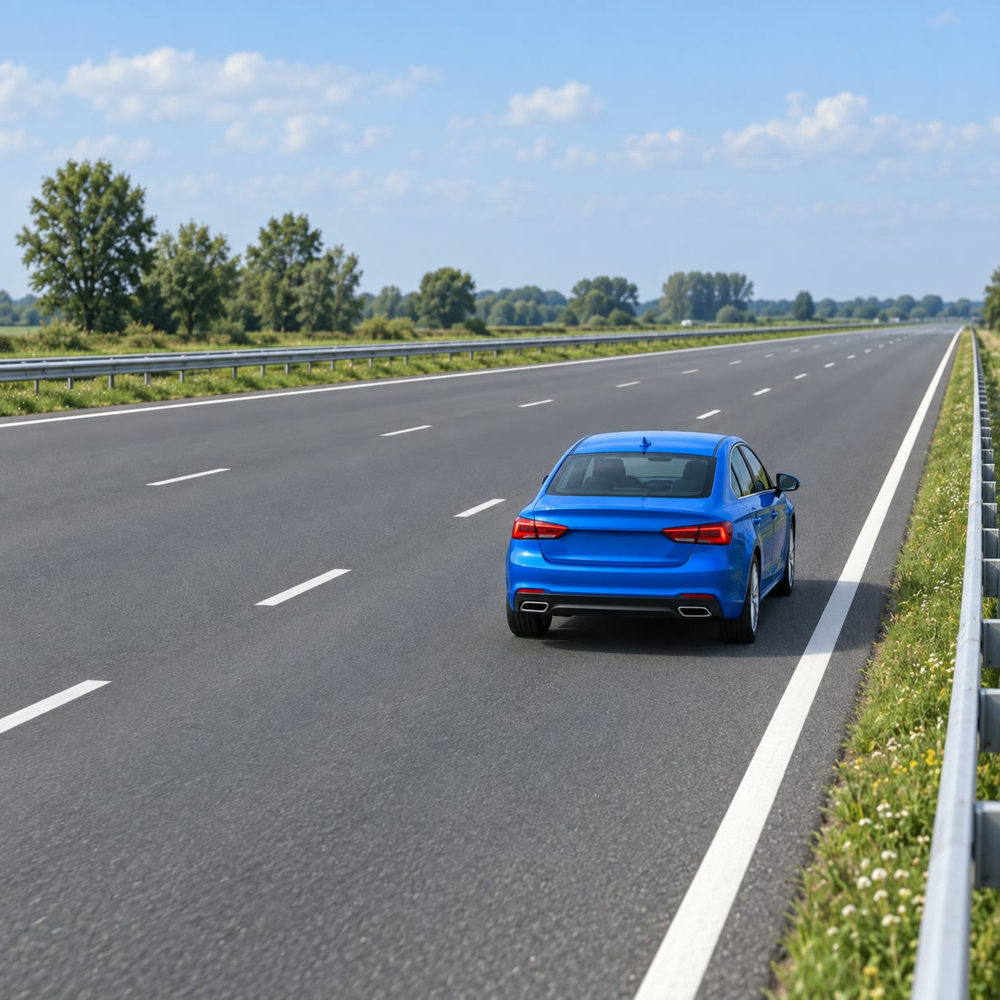
Пешеходы соблюдают строгий порядок выбора места для движения. В первую очередь: тротуар (trottoir) или пешеходная дорожка. Если нет ни того ни другого: велосипедная дорожка или совмещённая вело-мопедная дорожка. Если отсутствуют и они: обочина или самый край проезжей части.
Лица, передвигающиеся с помощью средств, не являющихся транспортными средствами — роликовых коньков, скейтборда, ходунков — используют велосипедную дорожку, пешеходную дорожку или тротуар. При их отсутствии они используют проезжую часть.

Велосипедисты обязаны использовать обязательную велосипедную дорожку или совмещённую вело-мопедную дорожку там, где она имеется. Если обязательной дорожки нет, они движутся по проезжей части. Они также вправе использовать необязательную велосипедную дорожку.
Лёгкий мопед (snorfiets) с двигателем внутреннего сгорания может двигаться по необязательной велосипедной дорожке только с выключенным двигателем.
Велосипеды или велосипеды с прицепом шириной более 0,75 метра (включая груз) в любом случае могут двигаться по проезжей части.
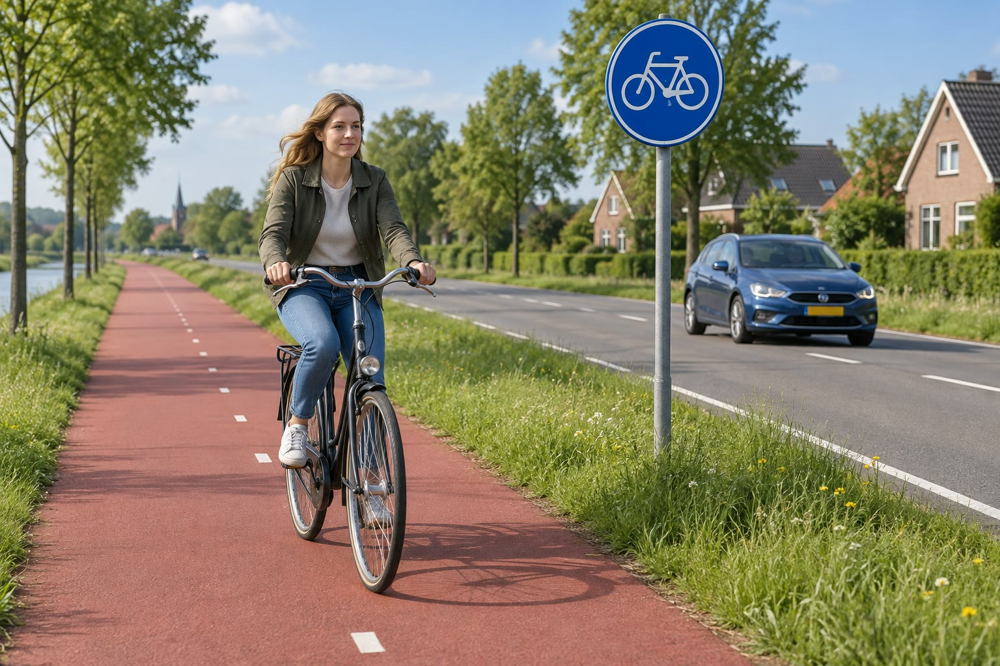
Водители мопедов (bromfiets) используют совмещённую вело-мопедную дорожку. При её отсутствии они движутся по проезжей части. Мопеды или мопеды с прицепом шириной более 0,75 метра (включая груз) всегда движутся по проезжей части.

Водители транспортных средств для людей с инвалидностью (gehandicaptenvoertuig) могут использовать любую из следующих частей дороги: тротуар, пешеходную дорожку, велосипедную дорожку, совмещённую вело-мопедную дорожку или проезжую часть. Они обладают полной свободой выбора наиболее подходящего покрытия.
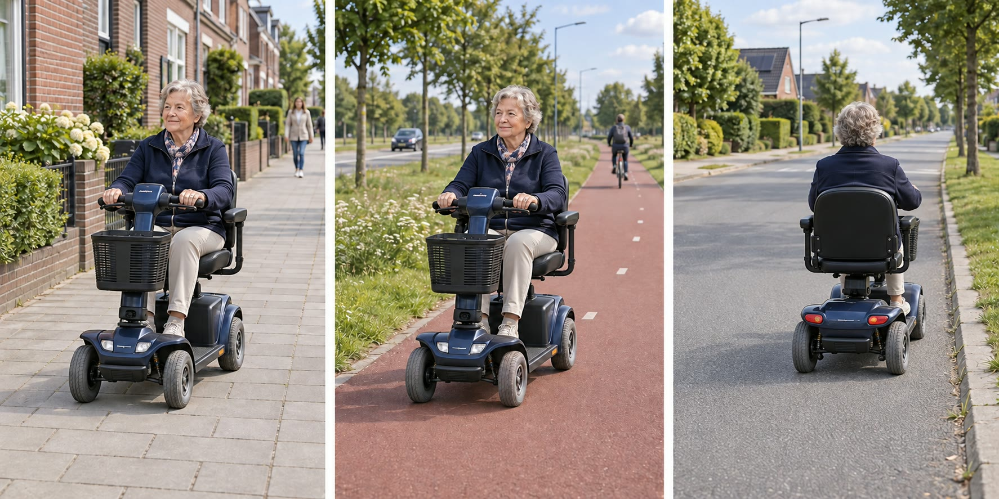
Всадники используют дорожку для верховой езды (ruiterpad). Если такой дорожки нет, они движутся по обочине или по проезжей части.
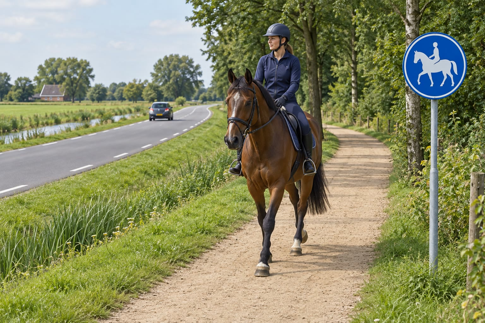
Все водители, не подпадающие под специальные правила выше — водители легковых автомобилей, грузовиков, автобусов — используют проезжую часть. Для стоянки они также могут использовать другие части дороги, за исключением тротуара, пешеходной дорожки, велосипедной дорожки, совмещённой вело-мопедной дорожки и дорожки для верховой езды.
Велосипедные полосы со сплошной линией разметки не могут использоваться никакими водителями, кроме велосипедистов и водителей транспортных средств для людей с инвалидностью.

Пешеходы, движущиеся организованной колонной, шествием или в составе похоронного кортежа, могут использовать проезжую часть. В этом случае на них распространяются правила дорожного движения для транспортных средств — включая сигналы светофоров и дорожную разметку.
§ 2 — Обгон
Стандартная сторона для обгона — и исключения из этого правила.
Стандартное правило: обгон и опережение выполняются слева. Вы перестраиваетесь левее, опережаете более медленное транспортное средство и возвращаетесь в правое положение.
Из этого правила есть конкретные исключения:
- Водителя, который занял крайнее левое положение и включил сигнал левого поворота, объезжают (опережают) справа.
- Велосипедисты обязаны обгонять других велосипедистов слева — но других водителей могут опережать справа.
- Водитель, находящийся справа от блочной разметки (широкой прерывистой линии), может опережать справа водителя, движущегося слева от этой разметки.
- Трамваи разрешается опережать справа.
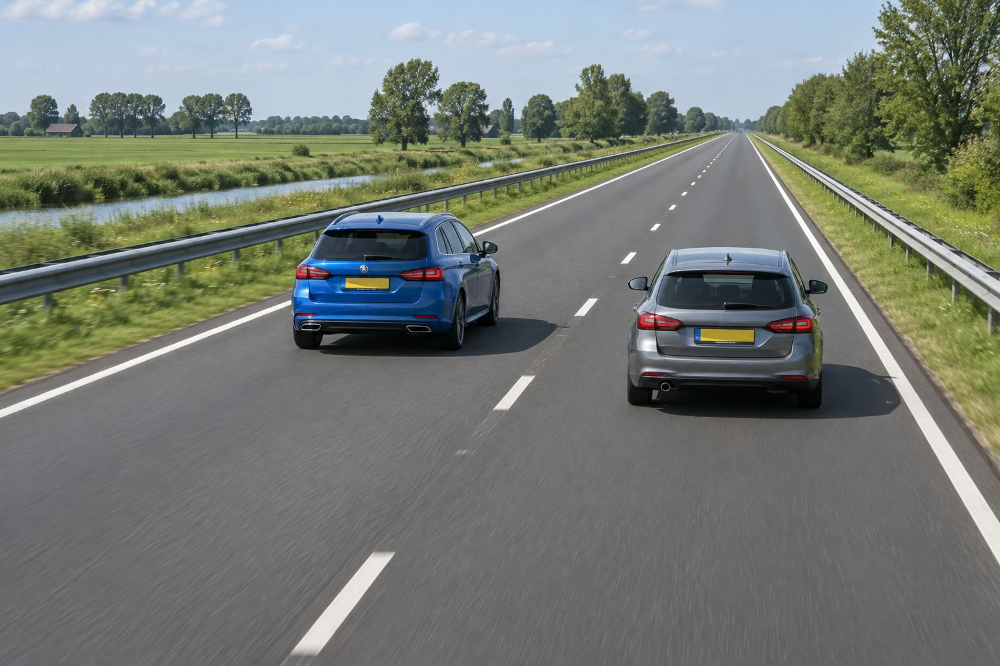
Запрещается обгонять транспортное средство непосредственно перед пешеходным переходом или на нём. Как только вы приближаетесь к переходу «зебра», любой обгон должен быть прекращён — независимо от того, насколько медленно движется впереди идущий транспорт.

§ 3 — Дорожные заторы (пробки)
Особые правила, действующие при полной остановке или плотном замедлении потока.
Когда транспортный поток стоит или движется очень медленно, а проезжая часть разделена на несколько полос попутного направления, вы не обязаны занимать крайнюю правую полосу. Оставайтесь в той полосе, по которой движетесь.
Когда транспорт движется плотными очередями по полосам, водителям разрешается опережать соседнюю очередь справа. Это исключение из обычного правила обгона слева.

Когда полоса заканчивается и потоки должны слиться, культура вождения в Нидерландах предполагает использование всей длины заканчивающейся полосы вплоть до места сужения, после чего перестроение выполняется поочерёдно — по одному автомобилю через один. В RVV 1990 это не закреплено как жёсткая норма закона, однако повсеместно применяется на практике и поддерживается дорожными знаками и разметкой.
§ 4 — Выезд на перекрёсток
Самое главное правило проезда перекрёстков.
Водителям запрещено блокировать перекрёсток. Это означает: не выезжайте на перекрёсток, если вы не можете полностью его покинуть. Если впереди образовался затор или транспорт стоит и вы не сможете проехать перекрёсток насквозь, подождите перед перекрёстком, пока путь за ним не освободится.
Блокирование перекрёстка перекрывает движение поперечному транспорту и является одной из самых частых причин «глухих» пробок в городах.

§ 5 — Право преимущественного проезда (приоритет)
Кто проезжает первым — базовые правила приоритета на перекрёстках и железнодорожных переездах.
На перекрёстках все водители обязаны уступать дорогу водителям, приближающимся справа. Это стандартное правило по умолчанию, когда знаки, светофоры или иные предписания не устанавливают другой порядок.
Действуют два исключения:
- Водители на грунтовой дороге (дороге без твёрдого покрытия) обязаны уступать дорогу водителям на дороге с твёрдым покрытием — независимо от того, с какой стороны те приближаются.
- На нерегулируемом перекрёстке водители обязаны уступать дорогу трамваям. Светофоры, указания уполномоченного регулировщика и соответствующие дорожные знаки могут устанавливать иной порядок очерёдности.
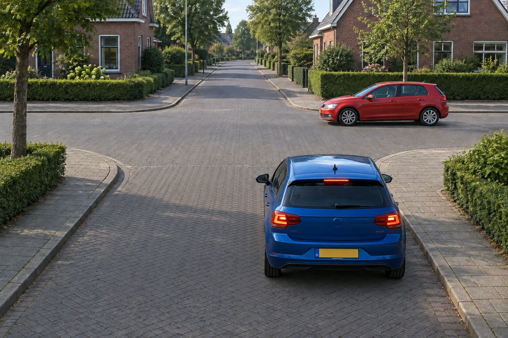
Приближаясь к перекрёстку, задавайте себе вопросы строго в таком порядке: (1) Есть ли регулировщик? Выполняйте его указания. (2) Работают ли светофоры? Руководствуйтесь ими. (3) Установлены ли знаки приоритета (главная дорога, «уступите дорогу», «движение без остановки запрещено»)? Следуйте знакам. (4) Ничего из перечисленного нет? Применяйте общие правила проезда перекрёстков: уступайте водителям справа с учётом установленных законом исключений, включая трамваи и выезд с грунтовой дороги на дорогу с твёрдым покрытием.
Участник дорожного движения может выезжать на железнодорожный переезд (overweg) только в том случае, если он может безостановочно продолжить движение и полностью освободить переезд. Никогда не выезжайте на переезд, если вы не уверены, что сможете пересечь его целиком без остановки на путях.
На железнодорожном переезде все участники дорожного движения обязаны пропустить любое рельсовое транспортное средство — поезд, трамвай, метро — и полностью освободить переезд на время его прохождения.

§ 6 — Военные колонны и похоронные кортежи
Участникам дорожного движения запрещается пересекать или разрывать военную колонну (militaire kolonne) или похоронный кортеж из механических транспортных средств (uitvaartstoet). Если такая колонна уже начала пересекать ваш путь, вы обязаны подождать, пока она пройдёт полностью — даже если по обычным правилам преимущество на вашей стороне.

§ 7 — Повороты
Как подавать сигнал, занимать положение и уступать дорогу при выполнении поворота.
Перед выполнением поворота водитель заблаговременно занимает соответствующее положение:
- Поворот направо: заблаговременно перестройтесь как можно правее.
- Поворот налево: приблизьтесь максимально близко к осевой линии дороги — а на дороге с односторонним движением займите крайнее левое положение.
Перед поворотом водитель обязан подать сигнал указателем поворота или, если транспортное средство не оборудовано указателями поворота, рукой.
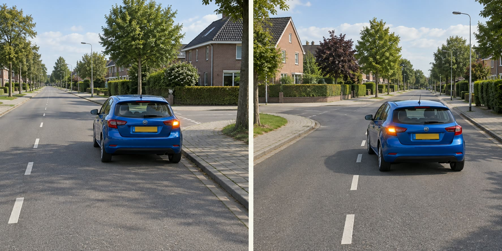
Поворачивающий водитель обязан уступить дорогу (пропустить всех участников движения, включая пешеходов):
- Всем участникам движения, движущимся навстречу по той же дороге.
- Всем участникам движения, движущимся попутно по той же дороге — слева, справа или непосредственно позади него (например, на соседней велодорожке или тротуаре).
Водитель, поворачивающий налево, обязан также уступить дорогу встречному водителю, который на том же перекрёстке поворачивает направо.

§ 8 — Ограничения скорости
Общий принцип безопасности, стандартные скоростные режимы и специальные ограничения для отдельных категорий транспорта.
Прежде чем вступает в силу любое числовое ограничение скорости, действует главенствующий принцип: водитель обязан выбирать такую скорость, чтобы всегда иметь возможность остановить транспортное средство в пределах обозреваемого впереди расстояния — и в пределах участка, свободного от препятствий. Это означает, что даже если вы едете ниже разрешённого лимита, ваша скорость слишком высока, если вы не успеете вовремя остановиться перед тем, что видите впереди.

В населённых пунктах (bebouwde kom)
на дороге
на проезжей части
на вело-мопедной дорожке
на велодорожке
на тротуаре / пешеходной дорожке
Вне населённых пунктов
| Тип транспортного средства | Автомагистраль (Autosnelweg) | Дорога для автомобилей (Autoweg) | Прочие дороги |
|---|---|---|---|
| Моторные ТС (легковые автомобили, фургоны) | Согласно установленным знакам — как правило, 100 км/ч с 06:00 до 19:00 почти на всех автомагистралях; на многих участках разрешено 100, 120 или 130 км/ч с 19:00 до 06:00 | 100 км/ч, если знаками не предписано иное | 80 км/ч, если знаками не предписано иное |
| Мопеды / моторизованные инвалидные ТС — на проезжей части | — | — | 45 км/ч |
| Мопеды / инвалидные ТС — на вело-мопедной дорожке | — | — | 40 км/ч |
| Инвалидные ТС — на велодорожке | — | — | 40 км/ч |
| Моторизованные инвалидные ТС и snorfiets — на тротуаре | — | — | 6 км/ч |
Специальные ограничения скорости для отдельных транспортных средств
| Транспортное средство | Максимальная скорость | Примечания |
|---|---|---|
| Грузовики, обычные автобусы (не T100), автодома (кемперы) > 3 500 кг | 80 км/ч | Независимо от типа дороги вне населённых пунктов |
| Автобус T100 | 100 км/ч | На автомагистралях и дорогах для автомобилей |
| Мопедный микроавтомобиль (brommobiel) | 45 км/ч | Всегда |
| Лёгкий мопед (snorfiets) | 25 км/ч | Всегда |
| Легковой автомобиль / фургон / мотоцикл / трёхколёсное моторное ТС / автобус T100 с прицепом ≤ 3 500 кг | 90 км/ч | С прицепом |
| Прочие моторные транспортные средства с прицепом | 80 км/ч | С прицепом |
| Сельскохозяйственные тракторы, тихоходные моторные ТС, самоходные машины | 25 км/ч | По умолчанию; 40 км/ч на дорогах вне населённых пунктов или на отдельных городских дорогах |
Указанные выше общие лимиты всегда применяются с учётом установленных дорожных знаков и электронных матричных табло. На нидерландских автомагистралях разрешённая скорость зависит от конкретного участка дороги и времени суток. С 06:00 до 19:00 почти на всех автомагистралях действует ограничение 100 км/ч, а на некоторых участках — 80 или 130 км/ч. С 19:00 до 06:00 на многих участках разрешено 100, 120 или 130 км/ч. Всегда соблюдайте лимит, действующий для вашей дороги и текущего времени суток.
§ 9 — Остановка (Stilstaan)
Места, где остановка — даже кратковременная — запрещена.
Водителю запрещается останавливать транспортное средство в любом из следующих мест:
- На перекрёстке или железнодорожном переезде
- На велосипедной полосе или на проезжей части рядом с велосипедной полосой
- На пешеходном переходе или ближе 5 метров от него
- В тоннеле
- У знака автобусной остановки — вдоль шахматной (блочной) разметки либо ближе 12 метров от знака, если такая разметка отсутствует
- На проезжей части рядом с автобусной полосой
- Вдоль сплошной жёлтой линии у края проезжей части или бордюра


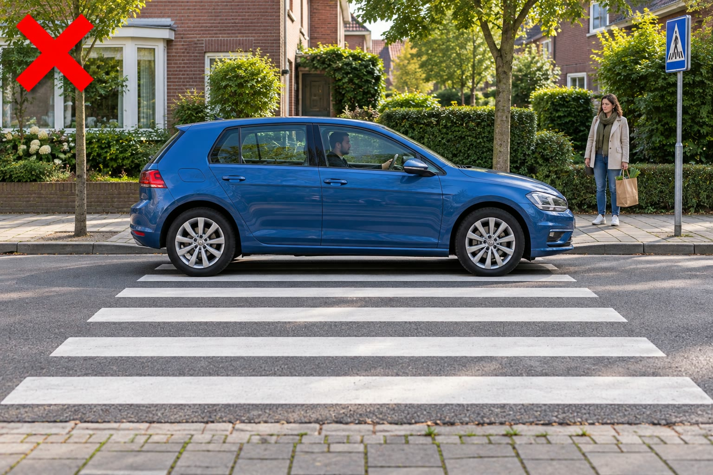
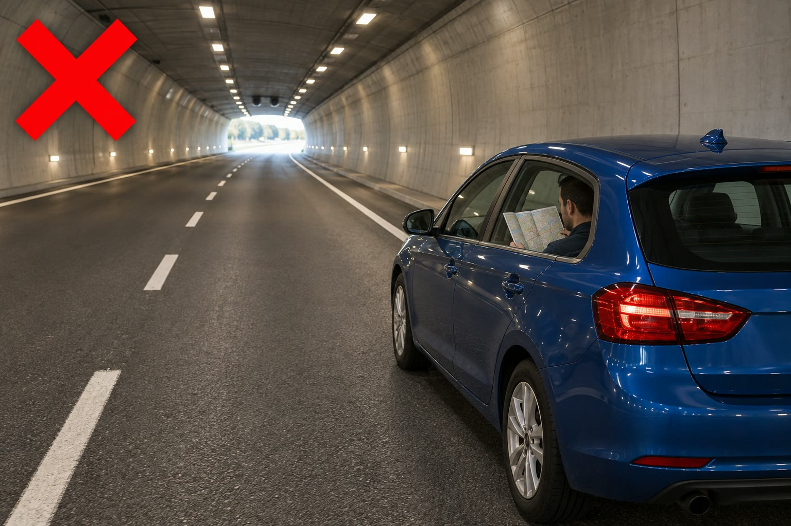


§ 10 — Стоянка (парковка)
Где запрещено оставлять транспортное средство на стоянку — и правила пользования размеченными парковочными местами.
Парковка (стоянка) запрещена в следующих местах:
- Ближе 5 метров от перекрёстка
- Перед въездом или выездом с прилегающей территории / двора
- На проезжей части главной дороги вне населённого пункта
- На парковочном месте, если ваше транспортное средство не относится к категории, указанной на знаке
- На парковочном месте иным способом или с иной целью, чем указано на знаке или табличке
- В месте или в период времени, когда парковка запрещена дорожным знаком
- Вдоль прерывистой жёлтой линии (стоянка запрещена)
- На пешеходном переходе или ближе 5 метров от него (как и остановка)
- На велосипедной или пешеходной дорожке
- Вторым рядом рядом с другим припаркованным транспортным средством

Там, где знак указывает зону парковки с ограничением времени — синюю зону (blauwe zone), водитель обязан разместить за лобовым стеклом парковочный диск (parkeerschijf) с выставленным временем прибытия. Диск должен быть хорошо виден снаружи через лобовое стекло. Стоянка дольше разрешённого на знаке времени запрещена.
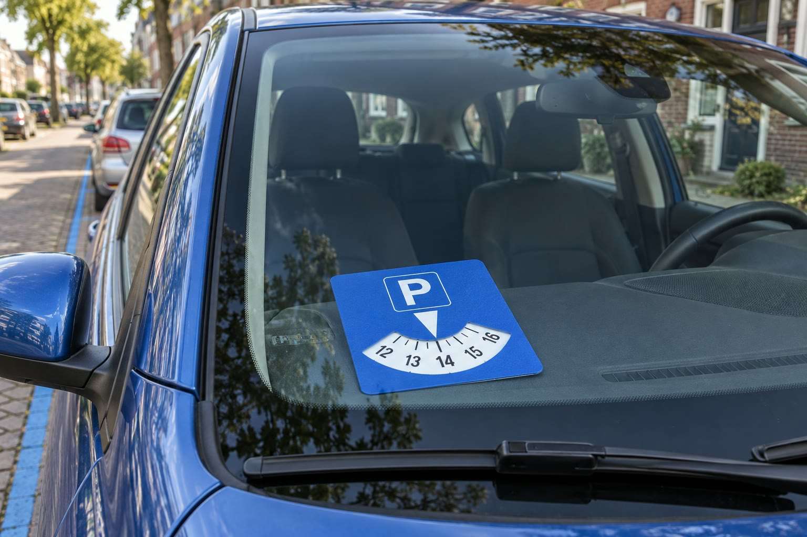
В местах действия платной парковки (betaald parkeren) водитель обязан соблюдать порядок и условия оплаты, установленные для данного места. Оплата может производиться через паркомат, мобильное парковочное приложение или иным разрешённым способом. Бумажный талон необходимо класть под стекло только тогда, когда этого требует местная система контроля. Парковка без действительной оплаты или сверх оплаченного времени запрещена.

Во всех местах из § 9 (где запрещена остановка) автоматически запрещена и парковка. Но для парковки действует ещё целый ряд дополнительных запретов. В месте, где разрешена короткая остановка для посадки/высадки пассажиров или погрузки/разгрузки, парковка может быть запрещена. Всегда проверяйте знаки и разметку.
§ 11 — Размещение велосипедов и мопедов
Велосипеды и мопеды должны размещаться так, чтобы не создавать помех другим участникам дорожного движения. Их нельзя оставлять на проезжей части, велосипедной дорожке, тротуаре или пешеходной дорожке таким образом, чтобы мешать свободному проходу пешеходов, проезду велосипедистов или иных участников движения. Там, где предусмотрены специальные велопарковки, необходимо пользоваться ими.

§ 12 — Сигналы и опознавательные знаки
Как информировать других о своих манёврах — а также установленные законом сигналы и опознавательные знаки для особых ситуаций.
Водители обязаны подавать чёткие и своевременные сигналы о намерении изменить направление движения или боковое положение на дороге. Сигналы подаются с помощью указателя поворота (richtingaanwijzer). Если транспортное средство не оборудовано указателями поворота, вместо них подаётся сигнал рукой. Сигнал необходимо включать до начала манёвра, а не во время его выполнения.

Приоритетное транспортное средство использует одновременно проблесковый маячок синего цвета и специальный звуковой сигнал (сирену). Эти сигналы разрешается включать только при выполнении неотложного служебного задания. Все остальные участники дорожного движения обязаны немедленно и беспрепятственно уступить дорогу транспортному средству с обоими включёнными сигналами.
Синий проблесковый маячок и сирена могут использоваться и в ситуациях, когда транспортное средство формально не выступает в роли приоритетного — например, когда полицейский автомобиль подаёт требование об остановке. В таком случае правила приоритетного спецтранспорта не применяются автоматически в полном объёме, однако участники движения обязаны отреагировать надлежащим образом.

Военные колонны (militaire kolonne) несут официально установленные опознавательные знаки, утверждённые совместно министром инфраструктуры и министром обороны. Эти обозначения отличают военную колонну от обычного потока транспорта и предупреждают других участников дорожного движения о том, что колонну запрещено пересекать или разрывать.
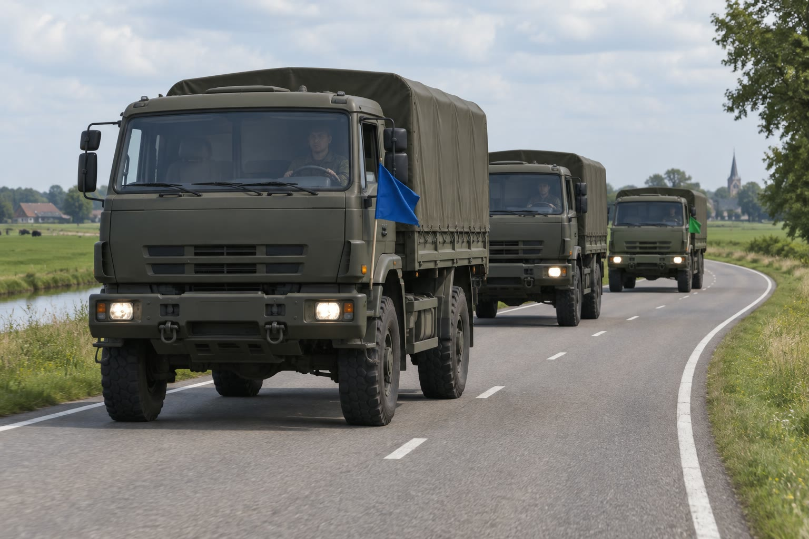
Официально обозначенный похоронный кортеж из механических транспортных средств (uitvaartstoet) использует установленные законом опознавательные знаки. Они представляют собой два чёрных треугольных флажка, закреплённых на участвующих автомобилях предписанным образом. Не путайте эти флажки с оранжевыми или фиолетовыми проблесковыми маячками.

Водителям разрешается подавать звуковые сигналы или кратковременные световые сигналы фарами исключительно для предотвращения непосредственной опасности. Это правило действует как в населённых пунктах, так и вне их. Поэтому звуковой сигнал или мигание фарами нельзя использовать для приветствия, выражения раздражения или просто для предупреждения о намерении пойти на обгон.

§ 13 — Освещение во время движения
Какие световые приборы и в каких условиях должны быть включены при движении транспортного средства.
Моторные транспортные средства обязаны использовать фары ближнего света (dimlichten) в тёмное время суток, а также в условиях недостаточной видимости — в туман, дождь, снегопад или в сумерках. Днём при хорошей видимости достаточно дневных ходовых огней (dagrijverlichting), если автомобиль ими оборудован. Фары не должны ослеплять других участников дорожного движения.
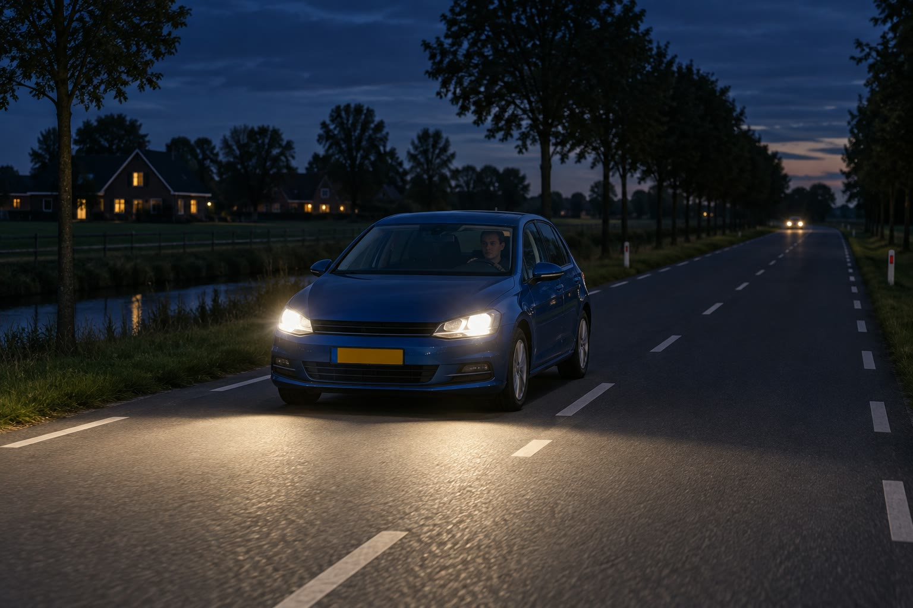
Велосипед при движении в тёмное время суток или в условиях плохой видимости должен иметь:
- Белый или жёлтый передний фонарь с постоянным (не мигающим) светом
- Красный задний фонарь с постоянным (не мигающим) светом
- Красный задний световозвращатель (не треугольной формы)
- Жёлтые / оранжевые световозвращатели на педалях
- Белые или жёлтые световозвращатели на колёсах / ободах или шинах

На всех транспортных средствах в тёмное время суток и в условиях плохой видимости должны гореть красные задние габаритные огни. Кроме того, они должны быть оснащены предписанными световозвращателями (катафотами) — их расположение и цвет зависят от типа транспортного средства, но принцип един для всех: транспортное средство должно быть отчётливо заметно сзади.

Передние противотуманные фары разрешается включать, когда туман, снегопад или дождь серьёзно ухудшают видимость. Задний противотуманный фонарь разрешается включать только тогда, когда туман или снегопад снижают видимость менее чем до 50 метров; включать его просто из-за сильного дождя запрещено. Как только погодные условия улучшаются, противотуманные приборы необходимо выключить.

Жёлтый (оранжевый) проблесковый или вращающийся маячок применяется в предусмотренных законом случаях для предупреждения других участников движения об особой или опасной ситуации — например, при дорожных работах, эвакуации транспорта или перевозке крупногабаритных грузов. Он не даёт транспортному средству права преимущественного проезда.

§ 14 — Освещение при остановке и стоянке
Обязанности по включению огней, когда ваше транспортное средство остановлено или припарковано.
В тёмное время суток — а также днём при серьёзном ухудшении видимости — моторное транспортное средство, стоящее вне населённого пункта на проезжей части, обязано иметь включённые предписанные передние и задние стояночные (габаритные) огни. Такая же обязанность действует на парковочных полосах, парковочных карманах, аварийных полосах и аварийных площадках вдоль автомагистралей и дорог для автомобилей.
В пределах населённых пунктов указанная специальная обязанность по включению стояночных огней на проезжей части в таком виде не применяется; тем не менее всегда следите за тем, чтобы автомобиль стоял безопасно, по правилам и был достаточно заметен.

§ 15 — Специальные световые сигналы
Синий проблесковый или вращающийся маячок может использоваться только теми транспортными средствами, которым это официально разрешено — прежде всего автомобилями скорой помощи, пожарной охраны и полиции. Он сигнализирует о неотложной ситуации, а в сочетании с сиреной наделяет автомобиль статусом приоритетного транспортного средства.

Зелёный проблесковый маячок зарезервирован за командно-штабным автомобилем, задействованным при координированных операциях полиции, пожарной службы или скорой помощи. Он обозначает автомобиль руководителя оперативного штаба на месте происшествия и сам по себе не делает транспортное средство приоритетным и не даёт преимущества в движении.

§ 16 — Автомагистрали и дороги для автомобилей
Особые правила, действующие только на автомагистралях (autosnelwegen) и дорогах для автомобилей (autowegen).
Следующим участникам дорожного движения запрещено пользоваться автомагистралью (Autosnelweg):
- Пешеходам
- Велосипедистам
- Водителям мопедов (как bromfiets, так и snorfiets)
- Водителям транспортных средств для людей с инвалидностью
- Всадникам и погонщикам животных
- Транспортным средствам, которые по своей конструкции не могут или по правилам не имеют права двигаться со скоростью не менее 60 км/ч
- Сельскохозяйственной технике и тихоходным моторным транспортным средствам

На автомагистрали запрещается:
- Останавливаться, разворачиваться или двигаться задним ходом
- Пересекать разделительную полосу
- Двигаться по аварийной полосе (vluchtstrook) — кроме экстренных случаев или когда она официально открыта как полоса часа пик (spitsstrook)
- Заезжать на направляющий островок с косой разметкой (verdrijvingsvlak) или пересекать его
Въезд и съезд разрешены исключительно через специально предназначенные полосы разгона (invoegstroken) и полосы торможения / съезда (uitrijstroken).

Дорога для автомобилей (Autoweg, знак G3) предназначена только для моторных транспортных средств, которые по своей конструкции способны и по правилам имеют право развивать скорость не менее 50 км/ч. Она не идентична автомагистрали и может иметь перекрёстки на одном уровне или иные схемы примыкания. Всегда руководствуйтесь знаками и разметкой на конкретном участке дороги.
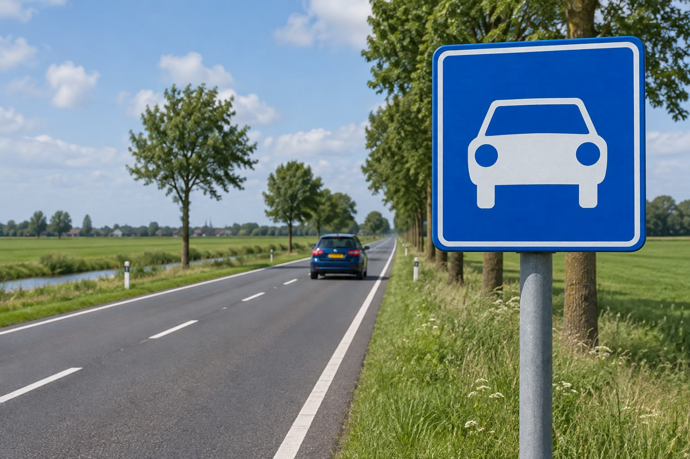
В часы пик аварийная полоса на некоторых автомагистралях открывается как дополнительная полоса для движения — полоса часа пик (spitsstrook). Электронные табло над дорогой показывают, открыта ли она в данный момент. Когда она открыта, по ней можно ехать как по обычной полосе. Когда над полосой горит красный крест, полоса закрыта, и движение по ней строго запрещено.
§ 17 — Жилые зоны (Erven)
Особые правила для зон, где пешеходы и транспорт делят общее дорожное пространство.
Внутри жилой зоны (erf) водителям запрещено двигаться со скоростью выше 15 км/ч. Это установленный законом максимальный предел скорости. Поскольку пешеходы вправе использовать всю ширину дороги, водители обязаны сохранять повышенную бдительность и быть готовыми безопасно среагировать в любой момент.
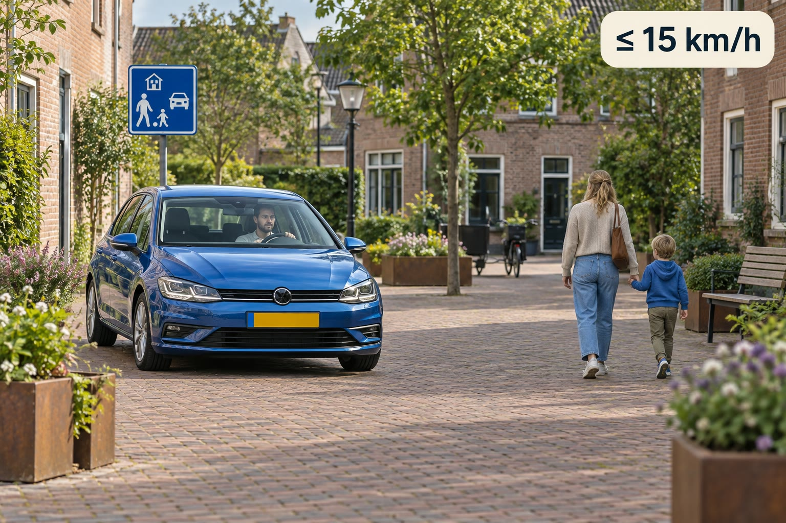
В пределах жилой зоны (erf) пешеходам разрешается использовать всю ширину дороги. Это само по себе не создаёт безусловного правила, что пешеходы автоматически имеют приоритет перед каждым водителем во всех ситуациях: обычные правила приоритета и маневрирования продолжают действовать. Тем не менее водители обязаны адаптировать своё поведение к общему характеру пространства жилой зоны и не создавать опасности.

Парковка внутри жилой зоны (erf) разрешена исключительно на специально обозначенных парковочных местах (со знаком P или соответствующей разметкой). Парковаться на любой другой части жилой зоны — просто на проезжей части или на общем пешеходном пространстве — запрещено.
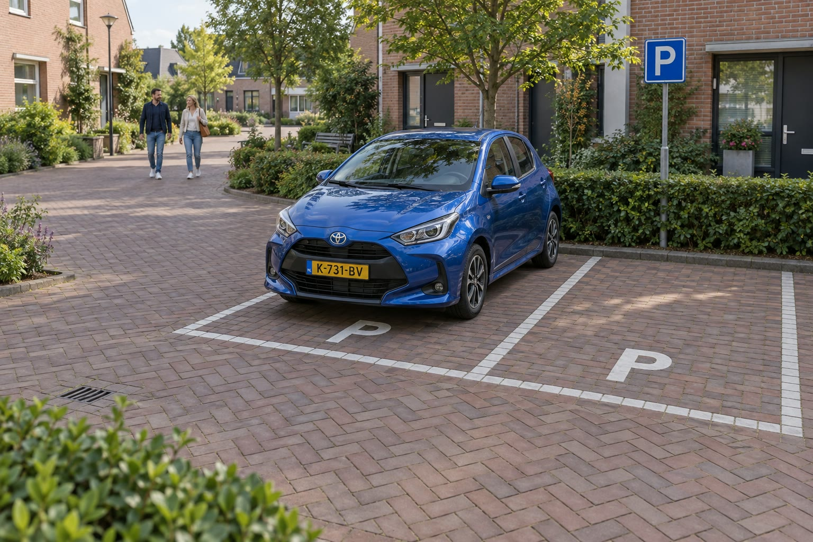
Выезжая из жилой зоны (erf) на обычную дорогу, водители обязаны уступить дорогу всем участникам дорожного движения на этой дороге — как приближающимся слева, так и справа (включая пешеходов и велосипедистов).
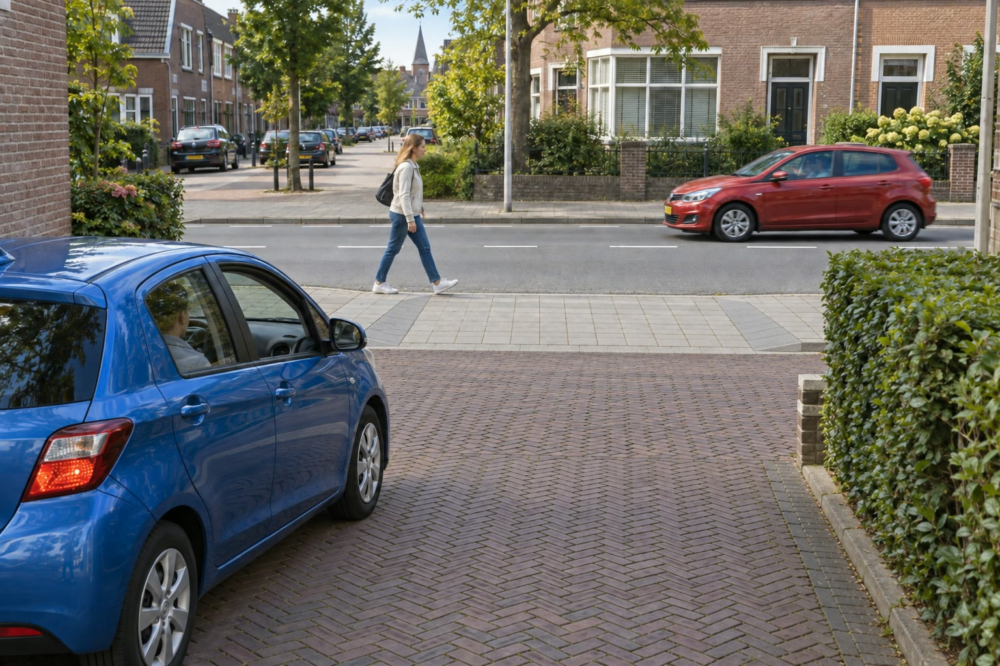
Жилая зона (erf) начинается со знака с белыми символами дома, автомобиля и идущего/играющего пешехода на синем фоне. Зона заканчивается у такого же знака, перечёркнутого красной диагональной полосой. Внутри всей этой зоны действуют перечисленные выше специальные правила.
§ 18 — Круговое движение
Очерёдность проезда на круговом перекрёстке определяется дорожными знаками и разметкой. На подавляющем большинстве круговых перекрёстков в Нидерландах перед въездом установлены знаки «уступите дорогу» и нанесена разметка «зубья акулы» (haaientanden), обязывающие въезжающих водителей уступать дорогу транспорту, уже движущемуся по кругу. Если же знаки приоритета или разметка отсутствуют, действует обычное правило «помехи справа» — в такой ситуации преимущество может иметь транспорт, въезжающий на круг справа.

При съезде с кругового перекрёстка обязательно включите правый указатель поворота перед нужным съездом. При въезде на сам круг или при проезде мимо съездов, которые вы не используете, подавать сигнал не обязательно (если вы не меняете полосу). Ключевой момент — заблаговременно включить правый поворотник непосредственно перед съездом, чтобы ожидающие въезда водители видели, что вы покидаете круг.

§ 19 — Пешеходы
Водители обязаны уступать дорогу пешеходам и водителям инвалидных колясок, которые уже идут по пешеходному переходу или явно собираются ступить на него. Это относится ко всем нерегулируемым переходам типа «зебра». Пешеход, ступивший на разметку перехода или стоящий у края с явным намерением перейти дорогу, имеет приоритет.
Велосипедисты также имеют приоритет на совмещённых переходах, где наряду с полосами «зебры» нанесены знаки/разметка приоритета для велосипедного переезда.

§ 20 — Приоритетные транспортные средства
При приближении приоритетного транспортного средства — с одновременно включёнными синим проблесковым маячком и сиреной — все остальные участники дорожного движения обязаны немедленно уступить ему дорогу. Это означает:
- Как можно быстрее и безопаснее сместиться в сторону
- При необходимости остановиться
- Не перекрывать траекторию движения приоритетного автомобиля
- При необходимости разрешается кратковременно сместиться туда, где остановка обычно запрещена (например, к жёлтой линии или на обочину), если это безопасно

§ 21 — Животные без привязи на дороге
Встретив животных на дороге или вблизи неё — домашний скот, лошадей, собак, диких животных — все участники движения обязаны снизить скорость и принять меры предосторожности. Поведение животных непредсказуемо, они могут внезапно метнуться под колёса. Объезжайте их медленно и с максимально возможным боковым интервалом. Не подавайте звуковой сигнал рядом с животными — это может ещё сильнее их напугать.

§ 22 — Посадка и высадка пассажиров
Когда трамвай или автобус остановился для посадки или высадки пассажиров и между дверьми транспорта и тротуаром нет посадочного островка безопасности, водители обязаны уступить дорогу этим пассажирам. Пассажиры, выходящие из трамвая или автобуса на проезжую часть или идущие к его дверям с тротуара, имеют приоритет — даже при отсутствии обозначенного пешеходного перехода.
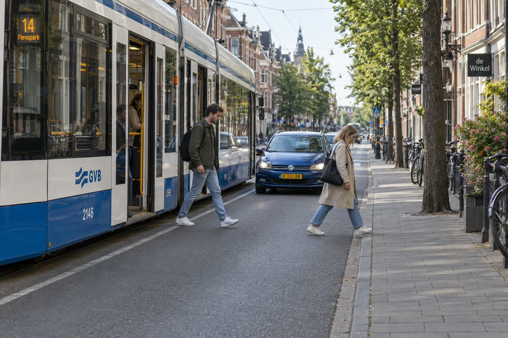
§ 23 — Буксировка транспортного средства
Когда одно моторное транспортное средство буксирует другое (slepen), расстояние от задней части буксирующего автомобиля до передней части буксируемого должно составлять не более 5 метров. Буксировочное соединение должно быть надёжным и безопасным, а буксируемый автомобиль должен сохранять управляемость и исправные тормоза.
Норма RVV 1990 о буксировке не устанавливает общего лимита скорости 25 км/ч при буксировке. Не заучивайте 25 км/ч как универсальное голландское правило буксировки. На автомагистралях и дорогах для автомобилей необходимо также соблюдать отдельные правила допуска и безопасности; в небезопасных или неподходящих условиях неисправный автомобиль должна эвакуировать специализированная служба помощи на дорогах.

§ 24 — Особые манёвры
Движение задним ходом, разворот, начало движения, перестроение и другие манёвры, требующие повышенного внимания.
Перед выполнением любого особого манёвра — движения задним ходом, разворота, выезда с парковочного места или с прилегающей территории, отъезда от обочины/тротуара, перестроения из полосы в полосу — водитель обязан сначала пропустить всех остальных участников дорожного движения (включая пешеходов и велосипедистов). Ни один особый манёвр нельзя начинать, если он вынудит другого участника движения изменить скорость или направление.

Движение задним ходом (achteruit rijden) допускается только тогда, когда оно может быть выполнено безопасно и без создания помех другим участникам движения. Необходимо тщательно контролировать обстановку позади автомобиля — с помощью зеркал и поворота головы через плечо. Быстрая езда задним ходом или движение задним ходом на большое расстояние по дороге общего пользования недопустимы.
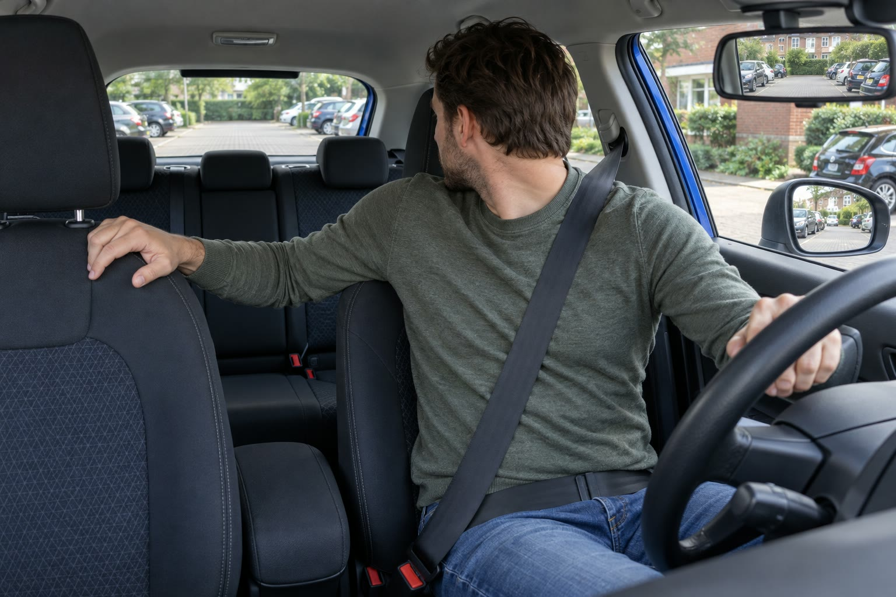
Разворот (keren / keermanoeuvre) разрешён только там, где его можно выполнить безопасно, не создавая помех и опасности для других участников дорожного движения. Разворот категорически запрещён на автомагистралях и дорогах для автомобилей, а также в местах, где установлен запрещающий знак.
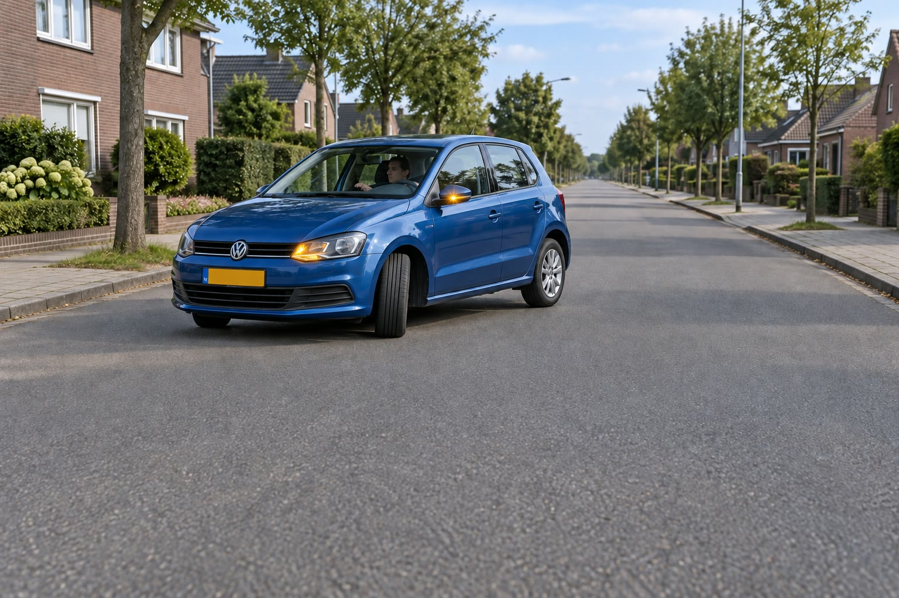
§ 25 — Излишний шум
Запрещается создавать излишний шум при эксплуатации транспортного средства. Сюда относятся беспричинная перегазовка двигателя, неоднократная подача звукового сигнала без угрозы безопасности, а также использование чрезмерно громких выхлопных систем. Звуковой сигнал служит исключительно средством предотвращения опасности, а не способом общения или выражения недовольства.

§ 26 — Знак аварийной остановки
Знак аварийной остановки (gevarendriehoek) в Нидерландах не является обязательным предметом оснащения, который всегда должен лежать в легковом автомобиле. Однако если остановившееся моторное транспортное средство с более чем двумя колёсами или прицеп образует препятствие, которое приближающиеся водители могут не заметить вовремя, их необходимо предупредить. Это можно сделать с помощью аварийной световой сигнализации или знака аварийной остановки. Если аварийная сигнализация исправно работает, выставлять треугольник не требуется. Если же используется знак аварийной остановки, его устанавливают на расстоянии около 30 метров от автомобиля со стороны приближающегося потока транспорта.

§ 26a — Места для сидения
Пассажирам разрешается занимать только специально предназначенные для сидения места (zitplaatsen) в транспортном средстве или на нём. Стоять в движущемся автомобиле, ехать в багажнике или располагаться в местах, не рассчитанных на перевозку людей, запрещено — за исключением транспортных средств, специально сконструированных для этого (например, городских автобусов со стоячими местами).

§ 27 — Ремни безопасности и детские удерживающие устройства
Все находящиеся в моторном транспортном средстве лица обязаны быть пристёгнуты ремнём безопасности (autogordel) во время движения. Водитель отвечает за то, чтобы пассажиры младше 18 лет были надлежащим образом пристёгнуты. Ремень безопасности должен располагаться правильно — через плечо и грудную клетку, а не пропускаться под рукой.

Дети ростом менее 1,35 метра в общем случае обязаны перевозиться в одобренном (сертифицированном) детском удерживающем устройстве, подходящем ребёнку и правильно установленном. Детей в одобренном автокресле разрешается перевозить как на переднем, так и на заднем сиденье. Детское автокресло, устанавливаемое спинкой вперёд (против хода движения), разрешается размещать на сиденье с фронтальной подушкой безопасности только в том случае, если эта подушка безопасности отключена.
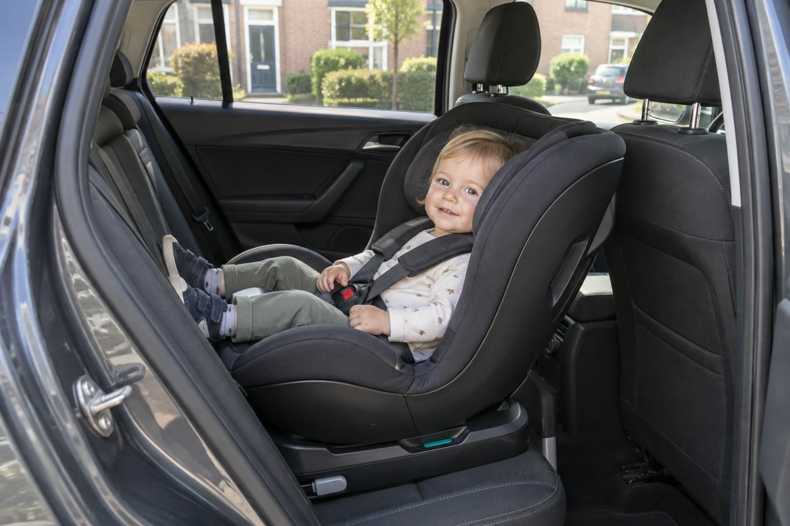
Отдельные категории лиц освобождены от обязанности пристёгиваться ремнём безопасности — например, лица с медицинским свидетельством, подтверждающим невозможность ношения ремня, водители при движении задним ходом и некоторые профессиональные категории. Индивидуальные освобождения указываются в специальной карточке-разрешении, которую необходимо иметь при себе в автомобиле.
§ 28 — Шлемы
Водитель и любой пассажир мотоцикла или мопеда (bromfiets) во время движения обязаны носить сертифицированный защитный шлем, который должен быть правильно надет и застёгнут. Шлем должен соответствовать установленному стандарту безопасности.
Водители лёгких мопедов (snorfiets) и их пассажиры также обязаны носить сертифицированный шлем. Водитель snorfiets может использовать одобренный мотошлем/мопедный шлем либо одобренный шлем для скоростного электровелосипеда (speed-pedelec). Водители и пассажиры speed-pedelec аналогичным образом обязаны использовать сертифицированный шлем.
Исключения для отдельных конструкций транспортных средств действуют только там, где это прямо предусмотрено законом — например, для некоторых закрытых транспортных средств или микроавтомобилей с сертифицированной защитной капсулой и ремнями безопасности. Не воспринимайте защитную дугу как универсальное личное освобождение от шлема.

§ 29 — Перевозка детей на велосипедах и мопедах
Дети младше 8 лет, перевозимые на велосипеде, лёгком мопеде (snorfiets) или мопеде (bromfiets), должны сидеть на безопасном месте, обеспечивающем достаточную опору для спины, рук и ног — например, в подходящем детском велокресле. При перевозке ребёнка на bromfiets или snorfiets также обязательно соблюдение требования о ношении шлема.
Закон делает акцент именно на безопасном месте с надёжной опорой; в нидерландских ПДД нет общего запрета перевозить на велосипеде более одного ребёнка. Количество пассажиров должно соответствовать конструкции транспортного средства и обеспечивать безопасное управление.

§ 30 — Мобильные телефоны за рулём
Во время движения запрещается держать в руке мобильный телефон — или любое другое портативное электронное устройство для связи, навигации или воспроизведения информации. Этот запрет распространяется на всех водителей транспортных средств: водителей автомобилей, велосипедистов, водителей мопедов и всех остальных.
Запрет касается именно удержания в руке мобильного электронного устройства во время управления транспортом. Использование в режиме «свободные руки» (hands-free) в принципе разрешено водителям, включая велосипедистов и водителей мопедов, при условии что устройство не удерживается в руке и его использование не создаёт опасности или помех дорожному движению. Таким образом, надёжно закреплённым в держателе устройством пользоваться можно, не беря его в руки, но полное внимание к дороге остаётся обязательным.

Нередко ошибочно полагают, что запрет на мобильный телефон распространяется только на автомобилистов. На самом деле он действует для всех водителей транспортных средств, включая велосипедистов. Езда на велосипеде с телефоном в руке запрещена и влечёт крупный штраф.
§ 31 — Перевозка пассажиров в прицепах и грузовых отсеках
В общем случае запрещается перевозить пассажиров в прицепах (включая жилые прицепы-караваны), в грузовом отсеке автомобиля или на открытой грузовой платформе грузовика. Пассажиры должны находиться в пассажирском салоне транспортного средства, а не внутри или на буксируемом прицепе.
Отдельные исключения предусмотрены для некоторых видов специализированного транспорта, организованных мероприятий при наличии специального разрешения муниципалитета/властей или исторических повозок при соблюдении строгих условий безопасности.
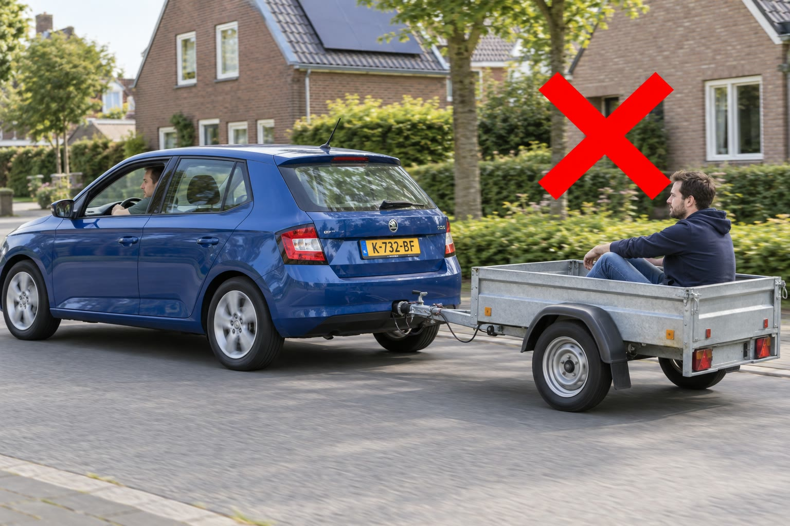
В главе 1 рассмотрены ключевые практические правила дорожного движения: где располагаться на дороге, как подавать сигналы, кому и когда уступать дорогу, как устроены скоростные ограничения, где запрещены остановка и стоянка, и какие требования безопасности обязательны. Главные принципы: держаться как можно правее, уступать дорогу водителям справа на равнозначных нерегулируемых перекрёстках, учитывать приоритет трамвая там, где этого требуют общие правила, не блокировать перекрёстки, заблаговременно подавать сигналы перед манёврами, соблюдать правила ремней безопасности и шлемов, а также помнить о строгом запрете держать мобильное электронное устройство в руке во время движения.
В вопросах о скорости всегда различайте общий законный лимит по умолчанию и ограничение, фактически указанное на знаках или табло. В частности, скорость на автомагистралях зависит от участка дороги, знаков и времени суток (06:00–19:00 и 19:00–06:00). В вопросах об остановке и стоянке чётко различайте сплошную жёлтую линию (запрещена даже остановка) и прерывистую жёлтую линию (запрещена парковка).